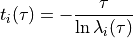

Check¶
Validate markov state model by computing implied timescale along different lagtime

This module needs to support check namelist
check namelist¶
The check namelist has following parameters:
Necessary Parameters
checkmethod: character The module only supports “timescales” now datafile: character The data file, after runing the msm, the cluster_forcheck.txt will be generated. nsnap: integer the number of frames ncluster: integer the nubmer of cluster lagstart: integer the start lag time lagend: integer the end lag time
Optional Parameters
nits: integer The nits first timescales will be computed. Default values is 5 lagfactor: double precesion This parameter decides how many lag time needs be to calculated. Default values is 1, which means that lagtime needs to be computed is (lagstart, lagstart+1, lagstart+2, …, lagend). Otherwise, the lagtime needs to be computed is (lagstart, ceiling(lagstart*lagfactor), ceiling(ceiling(lagstart*lagfactor)*lagfactor) ,… )
Example¶
The example of input file for check shows below
&check
checkmethod="timescales",
datafile="../info/cluster_forcheck.txt",
nsnap=200000,
ncluster=300,
lagstart=1,
lagend=25
/
Input file format¶
Input file for computing timescales on each lagstep
| cluster index | traj index |
|---|---|
| 17 | 1 |
| 17 | 1 |
| 17 | 1 |
| 17 | 1 |
| 17 | 1 |
| 30 | 2 |
| 30 | 2 |
- cluster index : cluster index
- traj index : trajectory index
Output File format¶
| Lag Time(Step) | ITS_1 | ITS_2 | ITS_3 | ITS_4 |
|---|---|---|---|---|
| 1 | 5.609200 | 4.861529 | 4.610854 | 3.925325 |
| 2 | 6.139198 | 5.365859 | 5.123708 | 4.476163 |
| 3 | 6.427766 | 5.660073 | 5.367871 | 4.793291 |
| 5 | 6.805771 | 6.039218 | 5.718156 | 5.188161 |
| 7 | 7.095851 | 6.359180 | 6.011286 | 5.464064 |
| 10 | 7.371417 | 6.601618 | 6.303304 | 5.781580 |
| 14 | 7.719357 | 6.915298 | 6.582905 | 6.129559 |
| 20 | 8.075277 | 7.169253 | 6.793979 | 6.640330 |
- Lag Time (Step) lag time
- ITS implied time scale. As the first eigenvalue is 1 for the transition matrix and the implied timescales is infinity. The total implied timescales is nits - 1
Run the check command¶
There are several ways to run the check command. Default input file is “check.in”， and default output file is “check.out” The user can provide the input file by -i with input file, and -o with output file.
The check module supports MPI, so provide the number of process behind -n option.
./msm.x check
./msm.x check -i file.in -o file.out
mpirun -n 4 ./msm.x check